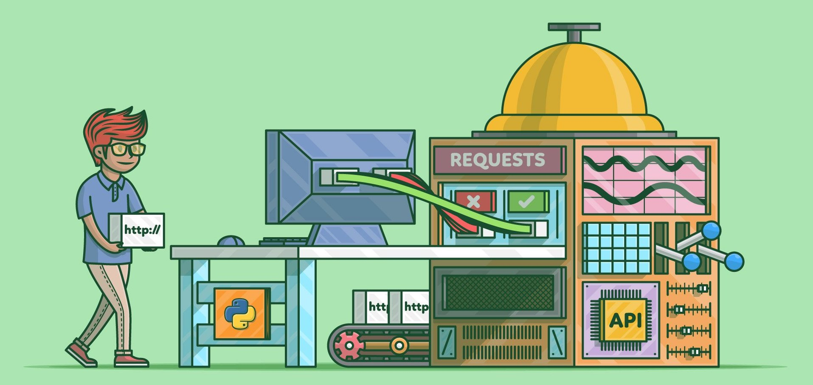
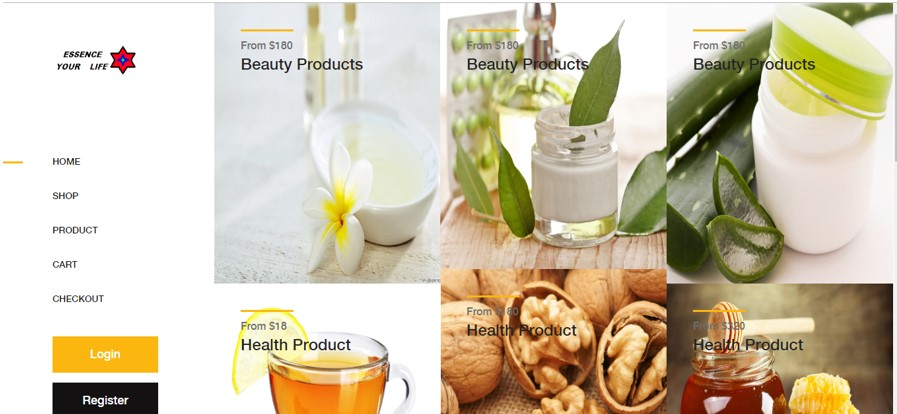
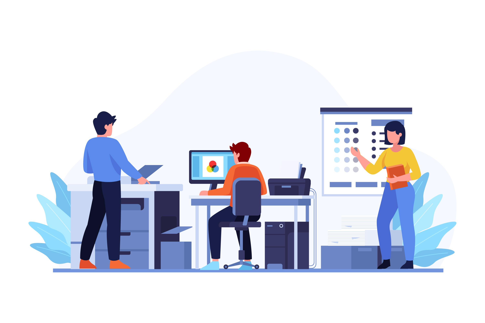

Building scalable, fault-tolerant backend systems at Walmart Global Tech with Go, Java, Kafka and Cassandra.
Hi, I'm Sharadha. I'm a backend software engineer with 3 years of experience building scalable, fault-tolerant e-commerce systems in Java and Go on Cassandra, Kafka and Kubernetes.
At Walmart Global Tech I build backend microservices and high-throughput, event-driven data pipelines for a large-scale e-commerce platform, and work on making them faster and more resilient.
I care about the parts that keep systems healthy after launch: observability with Grafana and Prometheus, real-time alerting, load testing and on-call ownership. I use AI coding tools (Cursor, Claude, Copilot) every day.
I hold an M.S. in Computer Science from George Mason University. I'm open to backend and full-stack software engineering roles — let's talk.
Fairfax, VA, USA
Degree: Master of Science in Computer Science
Dates: Aug 2022 – May 2024
Completed Relevant Courseworks:
Rajalakshmi Engineering College
Chennai, India
Degree: Bachelor of Engineering in Computer Science and Engineering (Anna University)
Dates: Aug 2017 – May 2021
CGPA: 8.85/10 First Class with Distinction Pass
Relevant Courseworks:
Software Engineer (Contract)
Software Engineer
Programmer Analyst Trainee
Click a project for details.



My resume covers my work at Walmart Global Tech, One Community and Cognizant, plus projects, skills and education.
I'm open to backend and full-stack software engineering roles. The fastest way to reach me is email — I usually reply within a day.